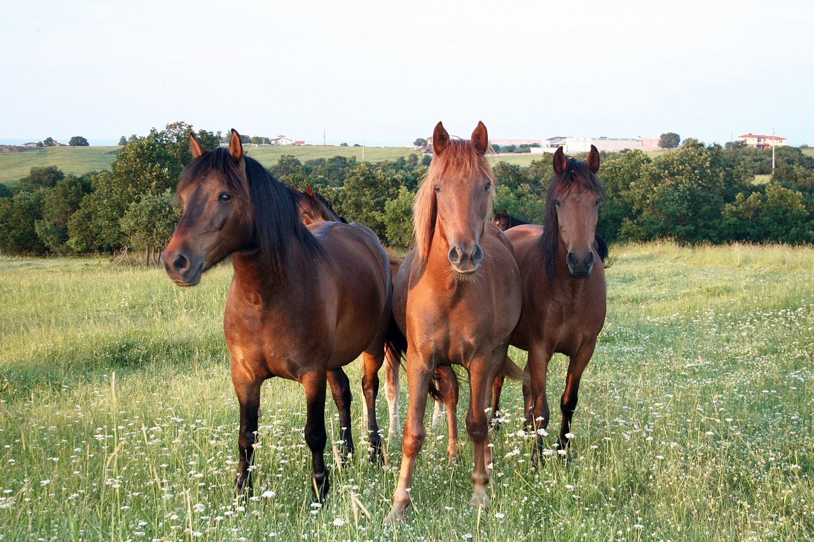

Die Weide
Das Gras von den Weiden bringt dem Pferd eine wichtige natürliche Futterquelle. Zudem kann sich ein Pferd auf der Weide frei und auf einem weitläufigen Gebiet bewegen. Es kann seine Energie rauslassen und zudem noch die sozialen Kontakte zu seinen Freunden pflegen.
